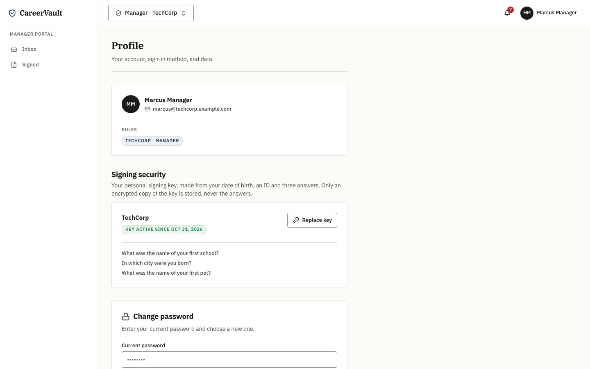
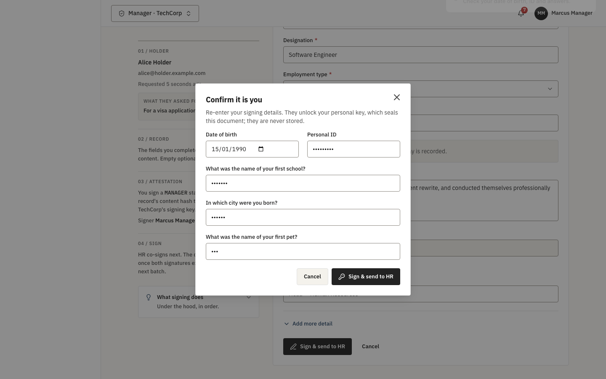
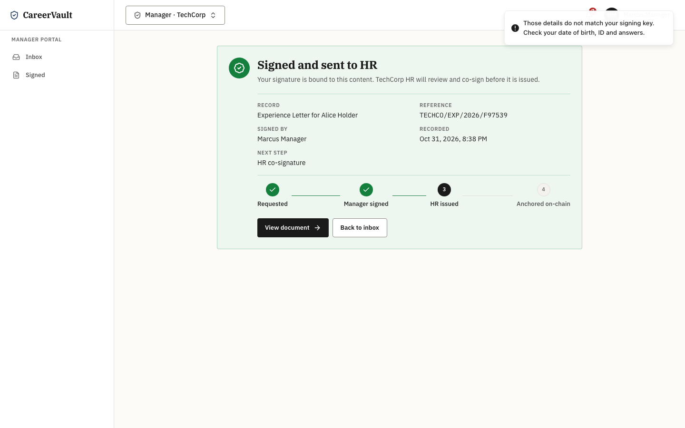
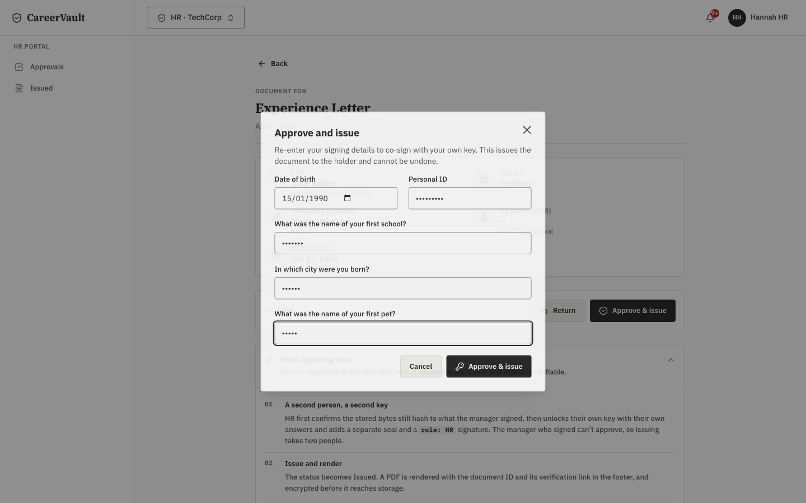
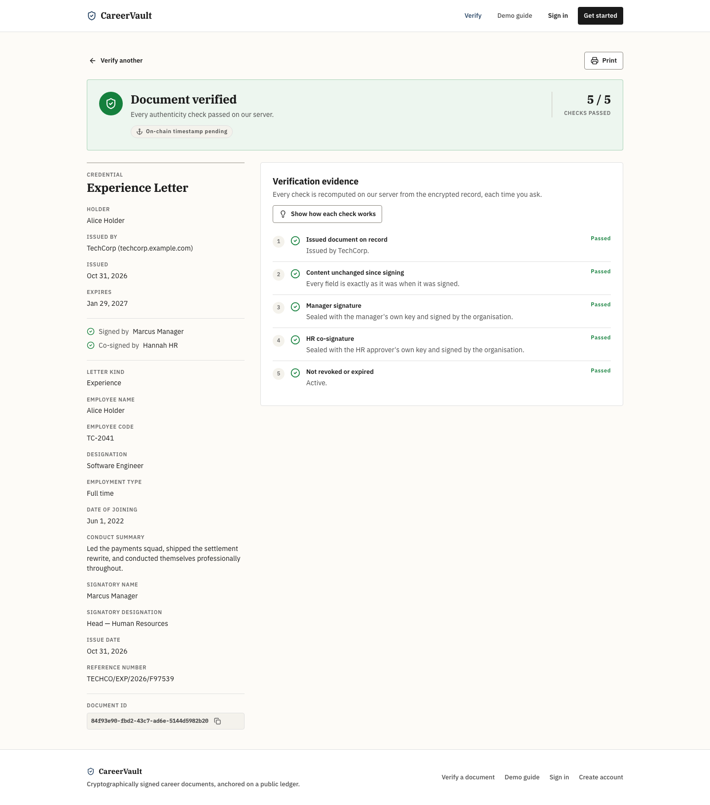
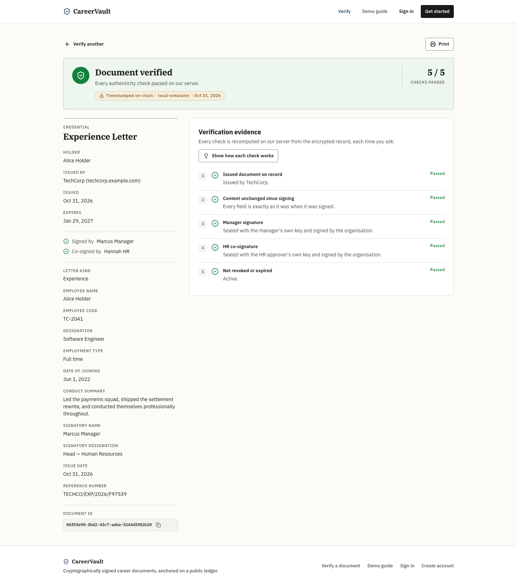
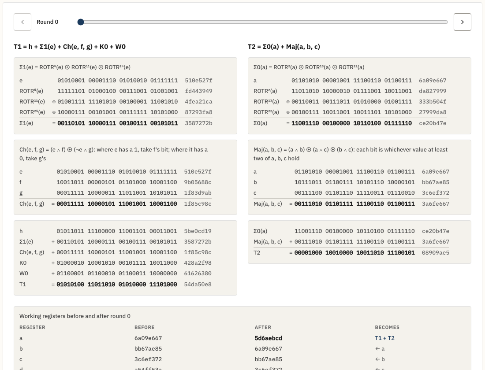

The second review gave us five security points. This page explains what we built for each one in simple words, what to say, and exactly what to click. The screenshots are from a full run on 31 Oct. The live site behaves the same once it has been reseeded (see Before you start).
Each point is in the code, covered by automated tests (458 pass), and live on the website. Use the words in the last column.
| Point | Done? | What we built (simple words) | What to say |
|---|---|---|---|
| 1 · Employee key Parts 1–2 |
Done | Every manager and HR person makes a personal signing key once, from date of birth, a personal ID and 3 security answers. PBKDF2 (600,000 rounds) turns them into a 256-bit key. It is stored only locked with AES-256-GCM. At every signature they type the details again: that unlocks the key, which seals the document (HMAC-SHA256), and then the company RSA-2048 key signs. | "AES locks the key, SHA-256 (as HMAC) seals the document, RSA-2048 signs. Two people, two personal keys. A stolen login cannot sign." |
| 2 · No proof files Part 3 |
Done | The .jsonld download and the file checker are gone. A verifier sends only the Document ID (or a share link). Our server does every check and answers with the result, the company and who signed. No salt, hash, key or algorithm name is sent back. |
"The verifier learns the result, not how to recompute it. A test fails if anything cryptographic ever appears in the reply." |
| 3 · Own bytes + SHA-256 Part 5 |
Done | No JSON library any more: we write the document as exact bytes ourselves (tag, length, value). SHA-256 is also written by hand, bit by bit, with a page that shows every step for “abc”. | "Production uses the standard SHA-256; the lab is our own copy that proves we understand it, checked live against the browser." |
| 4 · Blockchain optional Part 4 |
Done | The verdict depends only on our own checks. The chain is a small badge: pending, timestamped (with a PolygonScan link), not confirmed, or unreachable. | "It works as a complete product without a blockchain. Polygon adds a public timestamp." |
| 5 · Input hardening Part 6 |
Done | Every request is screened before it reaches our code (no __proto__, no <script>, no control characters). IDs and tokens have strict formats. All database queries are parameterised. Errors never show table names. |
"We don't block SQL words; we make them harmless. DROP TABLE as a name is saved as text, and the table is still there." |
Say these confidently. Each one is a security reason, not a shortcut.
| Suggestion | What we did, and the reason |
|---|---|
| Use the AES-encrypted key as the HMAC key | AES-GCM gives different output every time (random IV), so it would have to be stored; then anyone who reads the database has the HMAC key. So AES locks the key, the server unlocks it in memory for one signature, and HMAC uses the real key. |
| Make the key from DOB, ID and answers | Done, but honestly: DOB and ID are not secrets (HR knows them). The strength comes from the random salt, 600,000 PBKDF2 rounds and the server lock. The answers add a check only the employee can pass at each signature. |
| Strip SQL injection syntax from input | Blocklists break real names (O'Brien) and are easy to get around. Every query is parameterised, IDs have strict formats, and an ESLint rule bans the unsafe raw-SQL functions. |
| Zod on every API endpoint | The API already checks every field with class-validator (NestJS's standard). Zod stays on the browser forms. Two validators on one endpoint would drift apart. |
| Hide algorithms and public keys | Removed from the verify page. But security never depends on hiding the algorithm (Kerckhoffs's principle). What must stay secret, the salts and keys, does. |
| Remove the proof file | Done. It reverses October's “works without our server” point, on purpose: personal keys on the server make an offline check impossible. Trade-off: if CareerVault is down, verification waits. |
/verify/8291fc08-d0f4-47a9-b206-7bc1a5482ceb/verify/46969431-8f7b-4290-8d0c-5657f3f1e737 (holder name hidden on a public lookup)0x5121025e…ccc5c75815/01/1990 · Personal ID DEMO-0001Somaiya · Birth city Mumbai · First pet BrunoThe answers became a key with PBKDF2, 600,000 rounds. Only the AES-locked key is stored, never the answers. The screen only knows which questions he picked.

Rex) → refused. Fix it → signed.Wrong answer: the key does not unlock, nothing is signed, and the attempt is recorded. Right answers: the key seals these exact bytes with HMAC-SHA256, then TechCorp's RSA-2048 key signs.


HR first checks the stored bytes still hash to what the manager signed, then seals with her own key. Two people, two keys, one document.

/verify).verify/document/… reply. No hash, salt, key or algorithm in it.The browser sent only the ID. The server decrypted the record, rebuilt the bytes and re-checked the hash, both seals and both signatures. It is verified before the blockchain is even involved.

The verdict did not change; only the badge did. If Polygon were down, it would still say Verified and the badge would say unreachable.

abc. Section 1: 24 message bits, the single 1 bit, 423 zeros, 64-bit length = 512.ba7816bf…20015ad and the green line: matches the browser's own SHA-256.This is our own SHA-256 with no library. Its round-0 values match the FIPS 180-4 standard's worked example, and the tests check the official NIST answers.

B=https://career-vault-steel.vercel.app/api/v1
curl -s -X POST $B/auth/login -H 'content-type: application/json' \
-d "{\"email\":\"' OR 1=1 --\",\"password\":\"x\"}"
→ 400 "email must be an email"
curl -s -X POST $B/auth/login -H 'content-type: application/json' \
-d '{"email":"a@b.test","password":"x","__proto__":{"isAdmin":true}}'
→ 400 "The request was refused because it contains a reserved key."
curl -s -X POST $B/auth/register -H 'content-type: application/json' \
-d '{"email":"x@y.test","password":"Password123@","fullName":"<script>alert(1)</script>","accountType":"HOLDER"}'
→ 400 "The request was refused because it contains markup."
curl -s "$B/verify/document/1'%20OR%20'1'='1"
→ 400 "Validation failed (uuid is expected)"
And the stored case: a name like Robert'); DROP TABLE users;-- is saved as plain text, because every query is parameterised. Our automated test registers it and then checks the users table is still there.
The full suite: cd server && npm run test:e2e -- test/adversarial → 14 passed.
documents: content_json, salt, manager_seal, hr_seal all start with cvenc:v1: (AES-256-GCM).employee_keys: wrapped_key starts with ekw1:, kdf_iterations = 600000, question_ids only. No answers anywhere. content_json | salt | manager_seal
"cvenc:v1:5906e901d7… | cvenc:v1:5906e901d74cb8… | cvenc:v1:5906e901d74cb8…
version | kdf_iterations | question_ids | wrapped_key
1 | 600000 | {first-school,birth-city,first-pet} | ekw1:m0enlqqSrj-IbFKQ:WgQKFi0G…
| Question | Answer |
|---|---|
| Why PBKDF2 and not just SHA-256 of the answers? | SHA-256 is fast, so guesses are cheap. PBKDF2 repeats HMAC-SHA256 600,000 times (OWASP's figure), making every guess slow. The random salt means two people with the same answers get different keys. |
| What is HMAC, and why not plain SHA-256 with the key appended? | HMAC hashes twice with the key mixed in (inner and outer pad). Plain SHA-256(key ‖ data) is open to length-extension; HMAC is the standard keyed hash. |
| Where is the AES key? | KMS_MASTER_KEY, only on the server (Render secret). HKDF derives a separate key per organisation for employee keys, so one key never serves two purposes. |
| What if someone steals a manager's password? | They can log in but cannot sign: signing needs the step-up answers, and 5 wrong tries lock it for 15 minutes. |
| What if the manager forgets the answers? | Another org admin resets the key (never their own), the manager is notified, and enrols again. Old documents still verify: keys are retired, never deleted. |
| Why remove JCS if it is a standard? | JCS existed so outsiders could rebuild the text. Verification is now server-only, so our own fixed byte layout is simpler: no number formatting or escaping edge cases. It is length-prefixed, so fields cannot blur together. |
| Why is the hash still stored in plain text? | It is a fingerprint, not data: it reveals nothing without the secret salt, and it is the Merkle leaf for the chain. |
| Is the chain still useful? | Yes, as a public, independent timestamp. It no longer decides validity. |
| Can a database admin forge a document? | They would need the AES master key to write sealed fields and the employee's answers to make a seal. Strict mode refuses planted plaintext rows. |
Only one wrong answer during the demo. After 5 in 15 minutes the signer is locked (HTTP 429); then use another signer or wait.
Anything signed before 31 Oct shows Verification failed (old hashing). Reseed first, or don't open them.
Open /demo 5 minutes early so the server is awake. The first request can take 30–60 seconds.